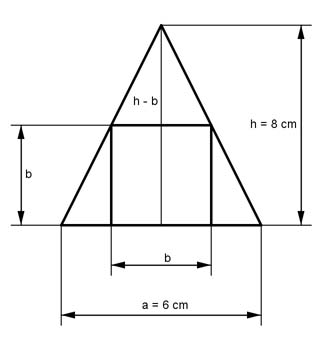

Aufgabe 215 Aus einer quadratischen Pyramide mit einer Grundseite a von 6 cm und einer Höhe h von 8 cm wird ein Würfel abgetrennt, dessen Grundfläche auf der Pyramidengrundfläche liegt und 4 Ecken auf den Pyramidenseitenkanten. Wie groß sind eine Würfelseite b und der Abfall A?  Strahlensatz: a h --- = ------- b h - b 6 8 ---- = ------ b 8 - b Über Kreuz multipliziert: 6 * (8 - b) = 8b 48 - 6b = 8b | +6b 14b = 48 |:14 b = 3,4 cm VWürfel = b³ = 3,4³ cm³ = 39,3 cm³ a² * h 6² cm² * 8 cm VPyramide = --------- = ------------------ = 96 cm³ 3 3 A = 96 cm³ - 39,3 cm³ = 56,7 cm³